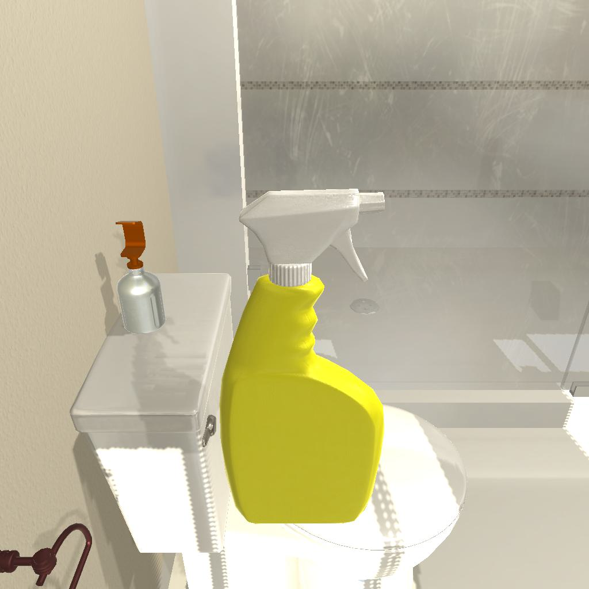

---------------------------------------------------------task: 28---------------------------------------------------------
--------------------------------------------------------------------------------------------------------------------------------------------------------------------
--------------------------------------------------------------------------------------------------------------------------------------------------------------------
Step:--------------------------------------------------------------------------12-------------------------------------------------------------------------------
----------------------------------------
VLM Prompt:
Image1:
**Instruction**
1. Analyze the provided image to identify all visible household objects, focusing on those relevant to the task description "find two spraybottle and put them in toilet."
2. Use the analysis of the image and the task hint "The agent must find an object of the desired type, pick it up, find the correct location to place it, put it down there, then look for another object of the desired type, pick it up, return to previous location, and put it down there with the other object." to answer the question: what is the most reasonable action in the choices for the task description "find two spraybottle and put them in toilet"?
4. Decide and write the answer using the template: The answer is: (i): , where i is the real number. If there is no desired object in the image, search every place based on **Initial Observation** to find the object. And if no one is exactly correct, choose a similar answer.
**Initial Observation**
You are in the middle of a room. Looking quickly around you, you can see bathtub (1), bathtubbasin (1), cart (1), sink (1), garbagecan (1), sinkbasin (1), countertop (1), drawer (1-4), toilet (1), toiletpaperhanger (1)
**Answer Choices**
(1): go to bathtub 1
(2): go to bathtubbasin 1
(3): go to cart 1
(4): go to sink 1
(5): go to garbagecan 1
(6): go to sinkbasin 1
(7): go to drawer 1
(8): go to drawer 2
(9): go to drawer 3
(10): go to drawer 4
(11): go to toiletpaperhanger 1
(12): put spraybottle 1 in/on toilet 1
(13): examine spraybottle 1
(14): examine toilet 1
**Answer**
Let's think step by step by following the instructions.
----------------------------------------
----------------------------------------
Original Response:
First, we need to identify the visible household objects relevant to the task description. In the image provided, we can see one spray bottle on the countertop. This is relevant to the task as we are looking for spray bottles.
Next, we need to think about the task hint. The task requires us to find two spray bottles, pick them up, and put them in the toilet. We have identified one spray bottle, so we need to find another. According to the initial observation, there are several locations where another spray bottle could potentially be found, such as the drawers or the cart.
Now, let's look at the answer choices to determine the most reasonable action. Since we have already found one spray bottle (spraybottle 1), we need to find the second one. The choices related to finding or examining the first spray bottle are not immediately relevant (choices 13 and 14).
The choices related to going to different parts of the room (choices 1-11) are potential actions to find the second spray bottle, but we need to prioritize based on the likelihood of finding such an item. Drawers and carts are common storage places for household items like spray bottles, so it would be reasonable to check there first.
Therefore, the most reasonable first action would be to go to a location where we might find another spray bottle. Since we do not have information on where the second spray bottle is, we should start by checking the drawers, as they are typical storage places. We can start with drawer 1 and proceed from there if needed.
The answer is: (7): go to drawer 1
----------------------------------------
----------------------------------------
>>> Refine Original VLM Response and Get Pure Action: go to drawer 1
----------------------------------------
-----------------------------------------------------------------
Running time: 13.577611684799194 seconds
Total Money: 10.10369
-----------------------------------------------------------------
-----------------------------------------------------------------
Text Observation:You arrive at loc 7. The drawer 1 is closed.
-----------------------------------------------------------------
UNSUCCEED